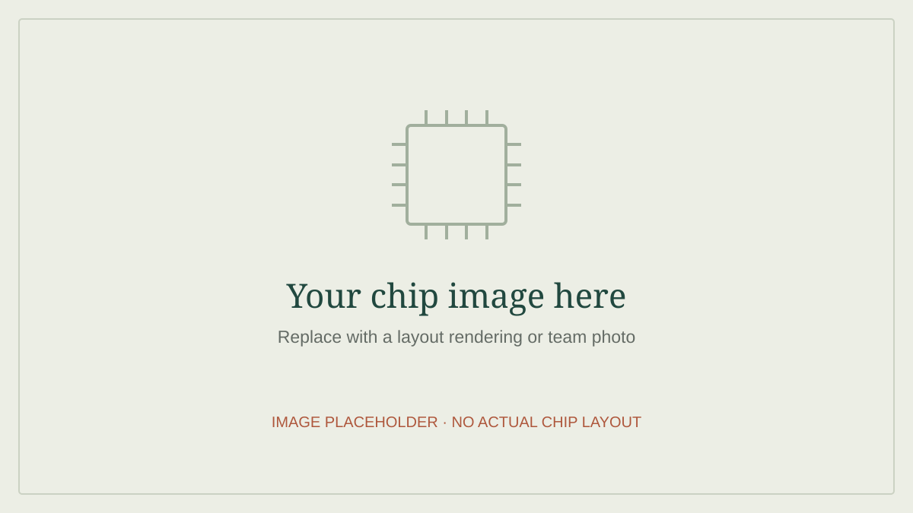

Chipstitch: A Scalable and Cost-Efficient Platform for Accelerated Silicon Prototyping
A scalable platform for making accelerated silicon prototyping more accessible.
Paul (Yi-Chia) Chen · USC
I’m an Electrical and Computer Engineering Ph.D. student in USC’s ACORN Research Group, advised by Prof. Christopher Torng. My research connects compilers, computer architecture, and silicon implementation.
01 / Latest publications
A scalable platform for making accelerated silicon prototyping more accessible.
Compiler-directed power management for energy-efficient edge AI inference.
02 / Latest posts

Our Intel 16 nm BERT accelerator, integrating the class chip with a star network, and the clocking challenges that motivated Chipstitch.
Read the post